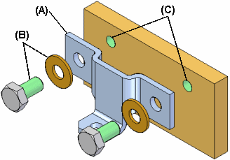
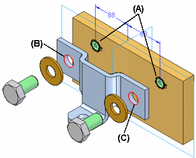
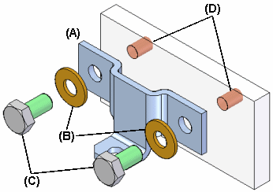
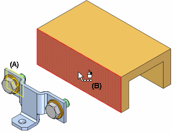
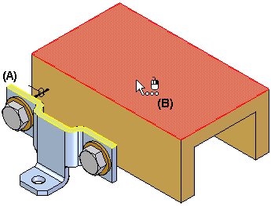
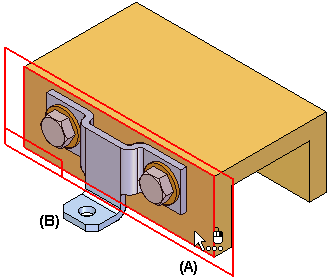
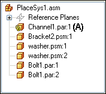

Working with Systems Libraries in assemblies
When building assemblies, you often need to use the same group of parts more than once. This group of parts may also need the same feature modification made to a mating part in the assembly to facilitate placement of the group of parts.
For example, you may need to place a bracket (A) and its mounting bolts and washers (B) in many different assemblies, or many times in one assembly. The bolts may also need mounting holes in the part (C) to which they are fastened.

You can use the Systems Library functionality in Solid Edge to define the group of parts, features, and assembly relationships so you can reuse them easily later.
The parts, features, and relationships for a Systems Library member are stored in an assembly document you define.
A Systems Library document can consist of the following:
-
Complete subassembly documents
-
Part documents
-
Features that are associative children of one of the part documents
Creating Systems Library members
When creating a new Systems Library member, you must adhere to the following rules:
-
You can only select parts and entire subassemblies that are in the top-level assembly.
-
You cannot create a Systems Library member when working in an alternate assembly. You can use the Save Member As command to save a copy of the alternate assembly as a normal assembly to use this functionality.
-
You cannot create a Systems Library member when you are in-place activated in a subassembly.
Creating a new Systems Library member
You create a new Systems Library member using the Create Systems Library command on the Home tab in the Systems group. When you click the Create Systems Library button, a command bar guides you through the steps required to create the Systems Library member:
-
Selecting the assembly components you want
-
Selecting the features you want to capture (optional)
-
Viewing the captured relationships
-
Defining the new assembly document name, template, and location
Selecting components
Any parts and subassemblies that are in the active assembly can be added to a Systems Library document. When adding a subassembly, the entire subassembly must be added. You cannot select individual parts in the subassembly. You can select the parts you want to capture in the assembly window or in PathFinder. If you select an assembly pattern, the parts that were used to define the pattern are automatically captured.
The parts and subassemblies you select are listed in the Selected Components dialog box. When you have selected all the parts and subassemblies you want in the new Systems Library member, click the Accept button on the command bar to proceed to Captures Features step. The relationships used to position the parts and subassemblies are automatically captured.
Capturing features
You can only capture features that were created using Inter-Part associativity techniques. If one of the parts you selected in the Select Components step was used as a parent to create an associative feature on another part, the associative child feature on that other part is available for use in the Systems Library member. For example, if the hole feature (A) in the mounting plate was constructed using the Project to Sketch command to associatively include edges (B) (C) from the bracket part, the hole feature (A) can be part of the Systems Library document.

For more information on Inter-Part associativity, see the Inter-Part Associativity Help topic.
In the previous example, the Systems Library member will then consist of the bracket part (A), the bolts and washers (B) (C), and the hole feature (D). When you place the Systems Library document later, the plate part itself is not placed.

When you select parts that have been used as parents in an associative Inter-Part feature, the child features that are available for including in the new Systems Library document are listed in the Captured Features dialog box and are highlighted in the assembly window so you can select only the features you want to capture.
You can also capture any treatment features that modified the associative Inter-Part feature. For example, if you added chamfers to the holes described earlier, you can add them to the captured features list by selecting the chamfer feature in the assembly window.
After you have selected the features you want to capture, click the Accept button on the command bar. If you do not want to capture features for the new Systems Library document, you can click the Next button on the command bar to bypass this step.
Capturing relationships
When you finish defining the parts and features you want to capture, the Capture Relationships dialog box is displayed so you can review the parts, features, and positioning relationships you captured. You can click the relationships listed on the Capture Relationships dialog box to highlight the faces used to define the relationship you selected, or you can click the OK button on the dialog box to dismiss it.
Defining the Systems Library container document
When you click the Create Group button on the command bar, the Create Systems Library dialog box is displayed so you can define the Systems Library document name and location, the assembly template you want to use, and rename any features you captured.
If you are going to share Systems Library documents with other users at your company, you should define file naming and location conventions to make it easier to use Systems Library documents.
Placing a Systems Library member document
You place a Systems Library member document by dragging the assembly document for the Systems Library member from the Parts Library page in PathFinder, and dropping it into the assembly window. When you drop the systems document in the assembly window, a command bar and the Input dialog box are displayed to guide you through the steps required to place the systems document:
-
Positioning the parts
-
Positioning the features
The parts that comprise the Systems Library document are also temporarily positioned in the assembly window.
The Input dialog box lists the assembly relationships required to position the Systems Library components. When placing the component parts and captured features, options are provided on the command bar to skip captured relationships or features. As you complete the steps required to define a relationship, the Input dialog box is updated to indicate the steps you have completed.
Positioning parts
You position the parts similarly to the way you would normally position a part in an assembly, by selecting a part already in the assembly, and a face or element on that part to define the relationship. If the Use Reduced Steps When Positioning Parts option is set, then you will only need to select a face or element on an assembly part to define the relationship.
When you drop the Systems Library member into the assembly, the face on the placement part for the first positioning relationship is highlighted (A). You can then select the target face in the assembly to satisfy the first relationship (B). The Input dialog box displays the relationship type and default value for each relationship. You can also use the command bar to define a new offset value for the first relationship, or skip defining the relationship entirely.

After you select the target face for the first relationship, the set of parts is repositioned, and the face on the placement part for the second positioning relationship is highlighted (A). You can then select the target face in the assembly to satisfy the second relationship (B).

You continue in this fashion until all the positioning relationships have been defined or skipped.
Positioning features
After you define the assembly relationships, you specify the part that you want to modify with the captured features. For example, if the feature you are placing is a hole feature, you would select a planar face on the assembly part (A) on which you want to apply the hole feature. The hole feature is associatively linked as a child of the parent part used to define the feature. In this example, the parent part is the bracket part (B).

After placement, the parts behave exactly the same as any part in an assembly. The Systems Library document itself is not placed into the assembly. It is used as a container that defines the systems components.
Reviewing Inter-Part relationships
The Inter-Part relationships that you use when creating a Systems Library member, and when you placing a Systems Library member are indicated in PathFinder, and can be further reviewed using the Inter-Part Manager dialog box.
For example, a symbol is added to the child part (A) in PathFinder to indicate that it is associatively linked to another part in the assembly.

How do I
Create a Systems Library documentPlace a Systems Library document
Look up more details
Create Systems Library commandCaptured Relationships dialog box
Create Systems Library command bar
Create Systems Library Documents dialog box
Parts Library tab
Place Systems Library dialog box (Input dialog)
Place Systems Library Member command bar
Teamcenter Parts Library tab